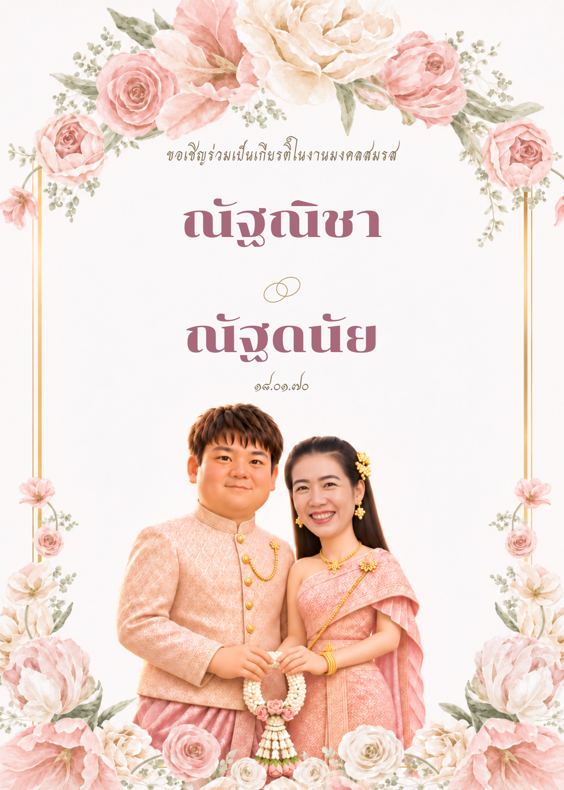

เตรียมการ์ด
เปิดภาพการ์ดด้านล่างบนคอมพิวเตอร์ หรือดาวน์โหลดไปพิมพ์
A LITTLE MAGIC FOR YOUR BIG DAY
ส่องการ์ด แล้วพบกับเราสองคน
คำเชิญเล็ก ๆ ที่มีรอยยิ้มรออยู่
ณัฐณิชา & ณัฐดนัย · 18 มกราคม 2570
เก็บการ์ดใบนี้ไว้
แล้วกลับมาพบกันได้เสมอ
จากรอยยิ้มของเรา สู่คำเชิญวันพิเศษ
ภาพแอนิเมชันบนระนาบ AR · รักษาหน้าตาตามแบบชุดไทย ไม่ใช่โมเดลที่หมุนดูได้รอบตัว
YOUR INVITATION TO A LITTLE WONDER
ใช้มือถือหนึ่งเครื่อง และเปิดภาพการ์ด
บนอีกหน้าจอ หรือพิมพ์ลงกระดาษ
เปิดภาพการ์ดด้านล่างบนคอมพิวเตอร์ หรือดาวน์โหลดไปพิมพ์
สแกน QR เพื่อเข้าเว็บนี้ แล้วแตะเปิดกล้องและอนุญาตการเข้าถึง
ส่องให้เห็นการ์ดทั้งใบในที่สว่าง บ่าวสาวจะปรากฏเหนือภาพ

THE KEEPSAKE
ใช้การ์ดชมพูด้านหน้าฉบับล่าสุดนี้สำหรับส่อง AR
เปิดภาพทั้งใบโดยไม่ตัดขอบ · QR เดิมยังใช้ได้ · ส่องเฉพาะด้านหน้าของการ์ด
QR นี้สร้างจาก URL ของเว็บที่คุณเปิดอยู่
หลัง deploy ให้ดาวน์โหลด QR จากหน้าเว็บ GitHub Pages
กำลังเตรียมกล้อง…
ส่องภาพการ์ดทั้งใบ · ขยับช้า ๆ · ใช้แสงสว่างพอ